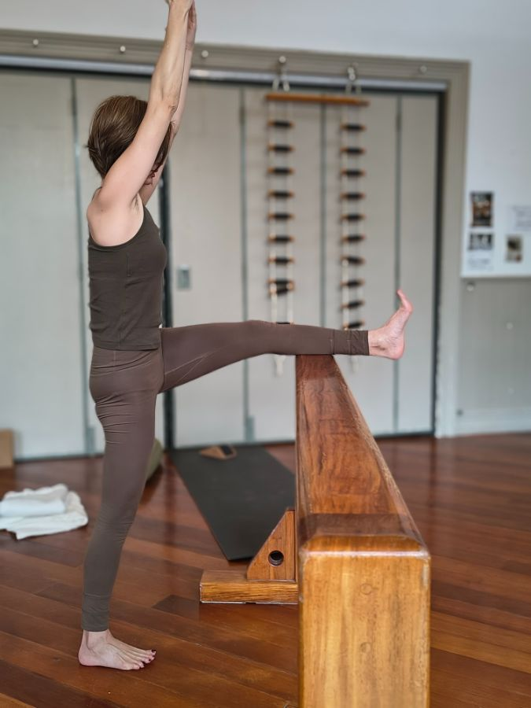
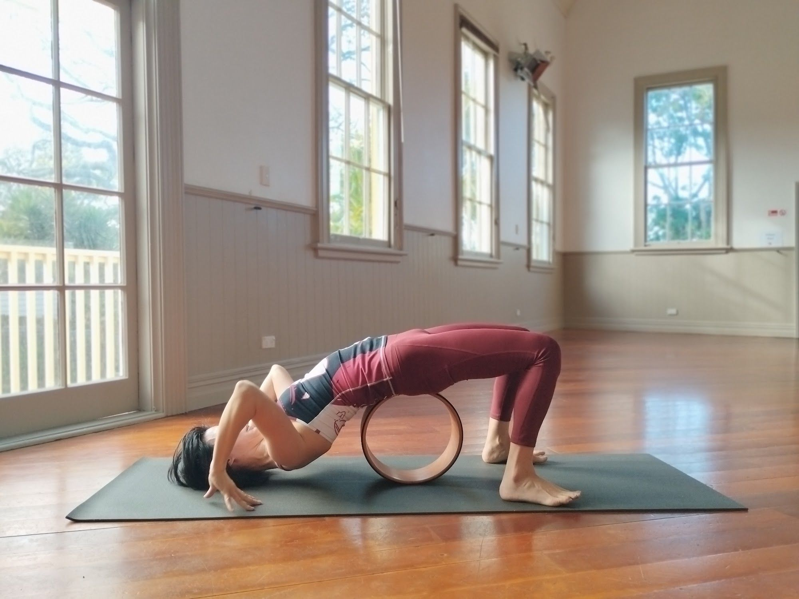
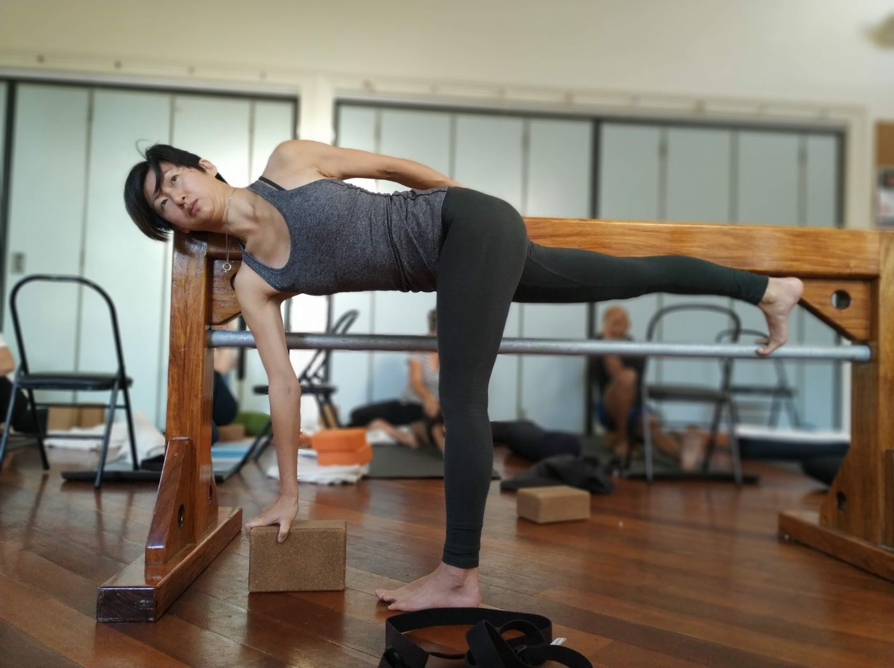
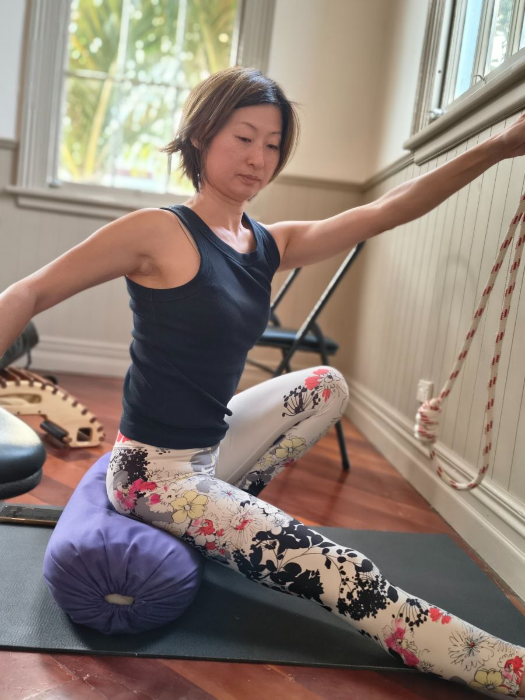
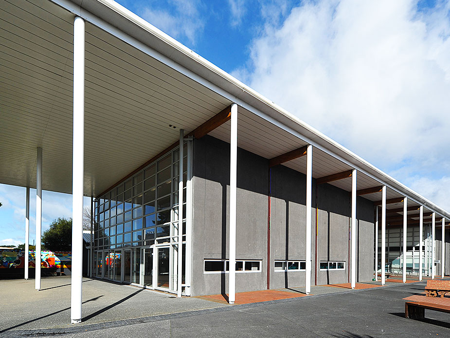
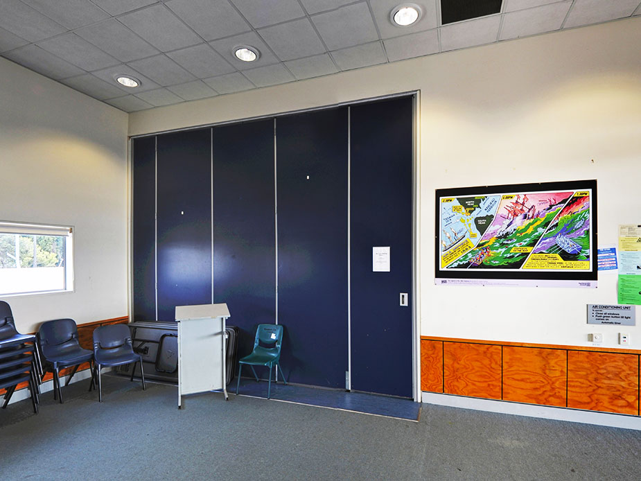
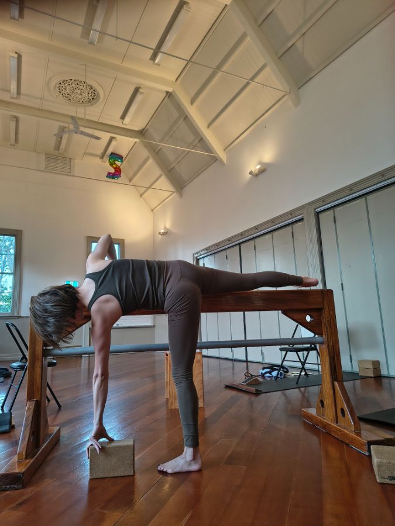
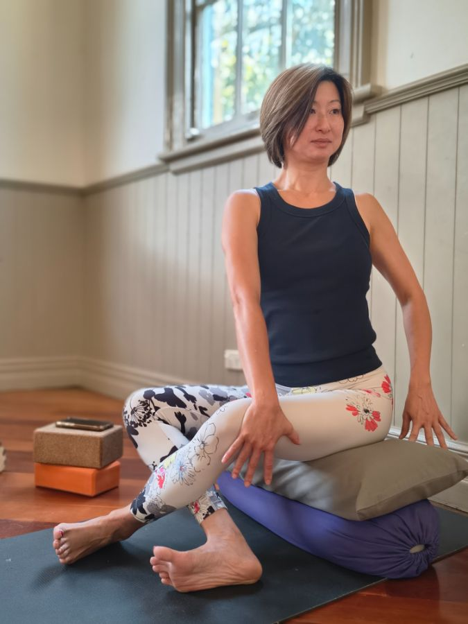

为什么艾扬格瑜伽要用辅具？為什麼艾揚格瑜珈要用輔具？Why Iyengar yoga uses props
砖、带子和椅子不是“偷懒”，而是让体式做准的工具。磚、帶子和椅子不是「偷懶」，而是讓體式做準的工具。Blocks, belts and chairs are not shortcuts. They help each pose become precise.
English
奥克兰 New Lynn · 小班团体课 · 私教课 · 辅具全部提供奧克蘭 New Lynn · 小班團體課 · 私教課 · 輔具全部提供New Lynn, Auckland · Small group classes · Private classes · All props provided
艾扬格瑜伽不追求快，也不靠高温。它把每一个体式做准、做稳，再借助瑜伽砖、带子和椅子，让每一种身体都能安全地练下去。艾揚格瑜珈不追求快，也不靠高溫。它把每一個體式做準、做穩，再借助瑜珈磚、帶子和椅子，讓每一種身體都能安全地練下去。Iyengar yoga is not fast and not heated. It makes every pose precise and steady, and uses blocks, belts and chairs so every body can practise safely.
Ting Ting 老师 · New Lynn, AucklandTing Ting 老師 · New Lynn, AucklandTing Ting · New Lynn, Auckland

由印度瑜伽大师 B.K.S. 艾扬格创立，是世界上练习最广的瑜伽体系之一。由印度瑜珈大師 B.K.S. 艾揚格創立，是世界上練習最廣的瑜珈體系之一。Developed by B.K.S. Iyengar in India, it is one of the most widely practised methods in the world.
来自台湾，2006 年起定居新西兰。一次骶髂关节受伤让她在 2014 年认识了艾扬格瑜伽，从此决定把生活投入瑜伽和教学。來自台灣，2006 年起定居紐西蘭。一次骶髂關節受傷讓她在 2014 年認識了艾揚格瑜珈，從此決定把生活投入瑜珈和教學。Originally from Taiwan, in New Zealand since 2006. A sacroiliac injury led her to Iyengar yoga in 2014, and she has dedicated her life to yoga and teaching since.
不需要任何基础，也不需要自己的装备。不需要任何基礎，也不需要自己的裝備。No experience or equipment needed.
在预约页填一下，老师会用 email 回复你。在預約頁填一下，老師會用 email 回覆你。Fill in the booking page and Ting Ting will reply by email.
旧伤、腰背或膝盖问题、怀孕，可以写在留言里。舊傷、腰背或膝蓋問題、懷孕，可以寫在留言裡。Injuries, back or knee problems, pregnancy: mention them in your message.
空腹练习更舒服。空腹練習更舒服。Practising on an empty stomach is more comfortable.
赤脚练习，带一瓶水，辅具都有提供。赤腳練習，帶一瓶水，輔具都有提供。Barefoot, bring water; props are provided.
老师会先认识你，帮你准备好辅具。老師會先認識你，幫你準備好輔具。Ting Ting will meet you and set up your props.

初稿：取自 Four Winds Yoga 网站上老师的英文介绍，等老师写好新版本后替换。初稿：取自 Four Winds Yoga 網站上老師的英文介紹，等老師寫好新版本後替換。Draft: based on Ting Ting's bio on the Four Winds Yoga site, to be replaced with her new version.
Ting Ting 来自台湾，2006 年起定居新西兰。打击乐一直是她生活的一部分，她在乐团担任鼓手，也学习和演奏爵士鼓。Ting Ting 來自台灣，2006 年起定居紐西蘭。打擊樂一直是她生活的一部分，她在樂團擔任鼓手，也學習和演奏爵士鼓。Ting Ting is originally from Taiwan and has called New Zealand home since 2006. Being a percussionist in music bands has featured throughout most of her life, along with the study and practice of jazz drumming.
女儿出生后不久，她的骶髂关节受了伤，也因此在 2014 年认识了艾扬格瑜伽，从此深深着迷。女兒出生後不久，她的骶髂關節受了傷，也因此在 2014 年認識了艾揚格瑜珈，從此深深著迷。After the birth of her daughter, and a sacroiliac injury that soon followed, she was introduced to Iyengar yoga in 2014 and has been enthralled ever since.
“2017 年，我以教师培训生的身份加入 Four Winds Yoga。艾扬格瑜伽让我能稳稳站在乐器后面完成整场演出，我也知道自己能专注，并帮助身边的乐手做到一样。带着这份心意，我决定把生活投入瑜伽和瑜伽教学。”「2017 年，我以教師培訓生的身份加入 Four Winds Yoga。艾揚格瑜珈讓我能穩穩站在樂器後面完成整場演出，我也知道自己能專注，並幫助身邊的樂手做到一樣。帶著這份心意，我決定把生活投入瑜珈和瑜珈教學。」“I was introduced to the Four Winds Yoga community in 2017 as a teacher trainee. Iyengar yoga has supported me to stand behind my instruments throughout my performance, knowing that I can focus and help my fellow musicians to do the same. With my desire and heart, I decided to dedicate my life to yoga and yoga teaching.”
她也为华人社区教中文瑜伽课。现在以小班和私教为主，让每一位学生都能被照顾到，同时自己也持续受训、进修。她也為華人社區教中文瑜珈課。現在以小班和私教為主，讓每一位學生都能被照顧到，同時自己也持續受訓、進修。She also teaches yoga in Mandarin for the Chinese community. She keeps to small groups and private classes, so every student gets proper attention, while continuing her own training.
艾扬格瑜伽由印度瑜伽大师 B.K.S. 艾扬格（1918–2014）在浦那创立，是世界上练习最广的瑜伽体系之一。它的特点是精准的身体排列、辅具的使用、有顺序的课程编排和较长的体式停留。艾揚格瑜珈由印度瑜珈大師 B.K.S. 艾揚格（1918–2014）在浦那創立，是世界上練習最廣的瑜珈體系之一。它的特點是精準的身體排列、輔具的使用、有順序的課程編排和較長的體式停留。Iyengar yoga was developed by B.K.S. Iyengar (1918–2014) in Pune, India, and is one of the most widely practised yoga methods in the world. It is known for precise alignment, the use of props, carefully sequenced classes and holding poses for longer.
因为有辅具帮助，不同年龄、不同身体条件的人都能练。辅具需要固定放在一个地方，所以老师的课都在固定的教室上。因為有輔具幫助，不同年齡、不同身體條件的人都能練。輔具需要固定放在一個地方，所以老師的課都在固定的教室上。Because props adapt each pose, people of every age and body can practise. The props need a permanent home, which is why classes are held in set locations.
New Lynn Community Centre, Meeting Room 1
适合第一次適合第一次Best first class小班小班Small group中文 / 中英双语中文 / 中英雙語Mandarin / bilingual
老师家中，辅具齐全老師家中，輔具齊全Ting Ting's home studio, fully equipped
时间另约時間另約By appointment可全程中文可全程中文Fully in Mandarin on request
| 星期星期DAY | 课程課程CLASS |
|---|---|
| 周二週二Tuesday | 18:00–19:00团体课 · 中英双语 · New Lynn Community Centre團體課 · 中英雙語 · New Lynn Community CentreGroup class · Bilingual · New Lynn Community Centre |
| 周五週五Friday | 08:30–09:30团体课 · 中文 · New Lynn Community Centre團體課 · 中文 · New Lynn Community CentreGroup class · Mandarin · New Lynn Community Centre |
| 其他时间其他時間Other times | 私教课另约私教課另約Private classes by appointment |
New Lynn Community Centre
Meeting Room 1 (First floor)
45 Totara Avenue, New Lynn, Auckland 0600


场地照片：Auckland Council場地照片：Auckland CouncilVenue photos: Auckland Council
所有课程都是上完课再付款，不用预付，也不收订金。所有課程都是上完課再付款，不用預付，也不收訂金。All classes are paid after class. No prepayment, no deposit.
没找到答案？在预约页直接留言问老师。沒找到答案？在預約頁直接留言問老師。Not answered here? Ask Ting Ting on the booking page.
可以。艾扬格瑜伽很适合初学者：老师会一步步讲解，并用瑜伽砖、带子、毯子等辅具帮你做到位。第一次来请提前 10 分钟到。可以。艾揚格瑜珈很適合初學者：老師會一步步講解，並用瑜珈磚、帶子、毯子等輔具幫你做到位。第一次來請提前 10 分鐘到。Yes. Iyengar yoga suits beginners well: Ting Ting explains each step and uses blocks, belts and blankets to help you into each pose. Arrive 10 minutes early for your first class.
它注重精准的身体排列，用辅具让每个人都能安全地进入体式，体式停留得更久，课程按顺序编排、循序渐进。它不是热瑜伽，也不追求快节奏。它注重精準的身體排列，用輔具讓每個人都能安全地進入體式，體式停留得更久，課程按順序編排、循序漸進。它不是熱瑜珈，也不追求快節奏。It focuses on precise alignment, uses props so everyone can practise safely, holds poses for longer, and builds each class in a careful sequence. It is not hot yoga and not fast-paced.
大多数人从团体课开始：价格低、小班，上完课再付款。如果有旧伤，或想一对一用中文学，可以先上一节私教课。大多數人從團體課開始：價格低、小班，上完課再付款。如果有舊傷，或想一對一用中文學，可以先上一節私教課。Most people start with a group class: low cost, small group, pay after class. If you have an injury or want one-to-one teaching in Mandarin, start with a private class.
不用。团体课和私教课都是上完课再付款，不需要预付，也不收订金。不用。團體課和私教課都是上完課再付款，不需要預付，也不收訂金。No deposit. Both group and private classes are paid after class.
请在预约时和上课前告诉老师，例如腰背、膝盖、肩膀的问题或高血压。老师会帮你调整体式。情况严重时，请先咨询医生。請在預約時和上課前告訴老師，例如腰背、膝蓋、肩膀的問題或高血壓。老師會幫你調整體式。情況嚴重時，請先諮詢醫生。Tell Ting Ting when you book and before class, for example back, knee or shoulder problems, or high blood pressure. She will adapt the poses for you. For serious conditions, check with your doctor first.
完全可以。辅具就是为了让身体僵硬的人也能做到位，柔韧性会在练习中慢慢改善。完全可以。輔具就是為了讓身體僵硬的人也能做到位，柔韌性會在練習中慢慢改善。Not at all. Props exist so stiff bodies can still do each pose well; flexibility improves with practice.
老师用中文和英文教学。周二团体课中英双语，周五团体课用中文；私教课可以全程用中文。老師用中文和英文教學。週二團體課中英雙語，週五團體課用中文；私教課可以全程用中文。Ting Ting teaches in both. The Tuesday group class is bilingual, the Friday class is in Mandarin, and private classes can be fully in Mandarin.
穿方便活动的衣服，赤脚练习，带一瓶水。辅具都有提供，有自己的瑜伽垫也可以带来。穿方便活動的衣服，赤腳練習，帶一瓶水。輔具都有提供，有自己的瑜珈墊也可以帶來。Clothes you can move in and a water bottle. You practise barefoot. Props are provided; bring your own mat if you have one.
建议上课前两小时不吃正餐，空腹练习会更舒服。建議上課前兩小時不吃正餐，空腹練習會更舒服。Avoid a full meal for two hours before class. Practising on an empty stomach is more comfortable.
在老师家中，辅具齐全。预约确认后会告诉你详细地址。在老師家中，輔具齊全。預約確認後會告訴你詳細地址。At Ting Ting's home studio, which is fully equipped. The address is sent once your booking is confirmed.
可以，上课前告诉老师。老师会安排适合的体式，例如不做倒立。可以，上課前告訴老師。老師會安排適合的體式，例如不做倒立。Yes. Let Ting Ting know before class and she will give you suitable poses, for example no inversions.
请先告诉老师并咨询医生。老师会判断是否适合，以及怎么调整。請先告訴老師並諮詢醫生。老師會判斷是否適合，以及怎麼調整。Tell Ting Ting first and check with your doctor. She will advise whether and how to adapt your practice.
每周一到两次，坚持下来就会感觉到变化。每週一到兩次，堅持下來就會感覺到變化。Once or twice a week, kept up over time, is when you start to feel the difference.
版面示例：文章等老师提供后放上版面範例：文章等老師提供後放上Layout sample: articles will be added once Ting Ting sends them

砖、带子和椅子不是“偷懒”，而是让体式做准的工具。磚、帶子和椅子不是「偷懶」，而是讓體式做準的工具。Blocks, belts and chairs are not shortcuts. They help each pose become precise.
English
很多人第一次在课上才发现，原来自己一直没有站直。很多人第一次在課上才發現，原來自己一直沒有站直。Many people discover in their first class that they have never really stood straight.
English
打鼓和瑜伽一样，都需要身体稳定，心才能专注。打鼓和瑜珈一樣，都需要身體穩定，心才能專注。Like drumming, yoga needs a steady body before the mind can focus.
English团体课每次 NZ$10，上完课再付款，适合先来试试。團體課每次 NZ$10，上完課再付款，適合先來試試。Group classes are NZ$10, paid after class. A good way to try it.